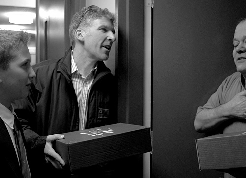

Shabbat to Share
The curiosity of the Beis Moshiach reporter was aroused when he saw someone who did not look religious loading up his car with boxes from the Chabad center. He went inside and spoke to the shliach, Rabbi Chaim Shlomo Cohen, and asked him what it was all about. * A meeting in the shliach’s office led

I visited Canada while it was still mid-winter and the streets were slippery with ice. People got around in their heated cars and tried not to venture forth for anything but necessities. This is why I was surprised to see Michael, a local Jew (whom I found out later is well-to-do) standing in the doorway of Merkaz MaDA (Merkaz Dovrei Ivrit of Chabad in Montreal) loading up boxes in the trunk of his car. On the boxes were emblazoned the words, “Shabbat to Share.” He seemed so busy with what he was doing that he barely noticed the cold.
The sight of someone who did not look religious loading up his car with boxes from the Chabad center aroused my curiosity. I went inside and asked the shliach, Rabbi Chaim Shlomo Cohen, to tell me about this project “Shabbat to Share.” This is what he told me:
THE BUSINESSMAN BEHIND THE PROJECT
Rabbi Chaim Shlomo Cohen (photograph by Levi Yisroel)It all began one day when a young businessman came into my office. He told me that he runs an investment firm and handles millions of dollars. He said to me, “There is stiff competition and lately things have gotten so bad that I am having a hard time paying my employees. What do you suggest? What can I do so that my business thrives?”
I told him that the Rebbe is the Nasi Ha’dor and the Rosh B’nei Yisroel and everything goes through him. I recommended that he write a letter to the Rebbe and ask for a bracha. He did so, and he opened to a letter about strengthening bitachon. A while later, someone showed up at his business and invested a quarter of a million dollars in exchange for a part ownership of the business. Some time passed. The man said he had no plans of investing more, and he agreed to forgo whatever profits were made to that point.
Since then, he writes a report to the Rebbe every day and he feels that the Rebbe runs his business. He sees wonderful results.
TAKING CARE OF SHABBOS AND YOM TOV MEALS
As many Chabad houses do, we arrange free meals for the needy every Yom Tov. One day, one of the balabatim said he had an idea to hold Yom Tov meals all over the city and he would pay the costs of this enormous project, which would include meals in ten halls and preparation of thousands of portions.
I asked him, “How will we do it? We need a place and workers. We will have to make extensive arrangements…”
“What’s the problem? The gabbai of the shul in the area that I live in will definitely agree to provide a place.”
It sounded good and I decided to go ahead with it. The first issue we had to deal with was staff. Where would we get so many workers? The solution just appeared, without us doing anything. Many people who heard about the idea offered their help as volunteers. This is how the Chabad house began arranging meals every Yom Tov for those who need it. Food preparation, setting up the place, cleaning up and kashering the kitchen are all done by volunteers. Many of them are not yet religiously observant.
The benefits of the meals are two-fold: Those who can’t eat at home are helped by the Chabad house and get more involved in Judaism, and those who have the wherewithal to eat at home but come and volunteer to prepare the meals also get more involved in Judaism.
A woman of around ninety years of age came to one of the s’darim we made. She is a Holocaust survivor. Her parents had been observant and when she found out about the s’darim we were making, she came along with her daughter and granddaughter. After the Seder, she said that this was the first time since her childhood that she was celebrating Pesach.
Another moving story took place when a woman wanted to celebrate her birthday by coming along with her family and serving as waiters at one of the meals. Afterward, the three generations of volunteers said it was the nicest birthday party they ever celebrated!
AMBITIOUS IDEA
A number of years went by. One day the same businessman (who reports to the Rebbe every day) came into my office and said, “We are doing a good thing and bringing people the joy of the holiday. What about the joy of Shabbat?” I thought he was joking. To arrange Shabbos meals every week is a never-ending project. We tried to brainstorm about how to do it and came up with a plan. We decided to call it “Shabbat in a Box” and the idea was to distribute boxes of Shabbos food to the needy. As soon as we started we saw that there was unfortunately a great demand for it.
After some time, the Jewish Federation asked us to change the name since they used the name “Shabbos in a Box” to distribute candles and challos. We thought about an alternative name.
Since the Rebbe explains that on Shabbos, unlike Yom Tov, there is no concept of “guest” since everybody is a “balabus,” we chose the name “Shabbat to Share,” meaning to include another Jew for Shabbos.
Thanks to the Federation’s request and the change in name, the project picked up steam, and today it’s a huge enterprise. Every box has candles, coins for tz’daka before lighting, a page for the meal that contains Divrei Torah, stories from the parsha and Inyanei Moshiach and Geula, and of course: grape juice, challa, salads, fish, chicken, etc. So every box includes several of the Rebbe’s mivtzaim.
When we started out, we needed to come up with an attractive box. We could have used plain boxes, but the Rebbe wants everything to be done in the nicest way possible. We discussed it and someone came up with a way of getting boxes cheaply.
He contacted someone with whom we had been trying to arrange a meeting for years. He owns a company that makes boxes and packaging. He loved the idea and was willing to manufacture boxes for us for free. He even suggested that we contact certain other people in order to include them. All this happened because we wanted nice boxes.
FOOD CONNECTS PEOPLE TO THE REBBE
We had cooks at the Chabad house that ran the daily soup kitchen we operate, but we had to divide the food into portions and pack them into individual boxes. Once again, many people volunteered their help. Some were prominent men of means. They all gathered at the Merkaz Chabad with their families and peeled vegetables and prepared packages. At a later point, we got calls from schools that wanted their students to volunteer. All this help spurs us on to expand so we can put all the volunteers to good use.
Distributing the packages to hundreds of homes every week is also done by volunteers. People who heard about the project and are excited about it come and pick up boxes and distribute them. They are happy and proud to be a part of it.
Aside from the very important goal which is to connect Jews to Shabbos and to ensure they have the means to enjoy it, the project connects many people to the Chabad house and to the Rebbe.
I was sitting with one of my balabatim with whom I had never had an easy time and he suddenly came up with an idea: that every man of means should sponsor five needy people a year. “The moment they will start paying and get involved, they will already belong to the Beit Chabad,” he said.
Here’s another example. We needed to buy a refrigerator. A wealthy woman who came to volunteer and peel vegetables heard about this and decided to donate one.
This project also reaches those needy people whom nobody knew were in need. In one situation, a person whom everyone thought did not lack for anything, told us that he has two children with special needs whom he takes care of himself, and it would relieve his burden if he received Shabbos meals. When the volunteer went to his address, he discovered, to his surprise, that although the person lived in an exclusive area, the windows were covered with blankets because the man did not have money to buy curtains.
Stories like the one about the woman who told us that this was the only cooked meal she ate all week, inspires the volunteers to keep on helping.
We recently got a phone call from someone who hardly ever comes to the Chabad house but regularly supports our activities. He told us his wife gave birth to a boy and he wanted to make the bris at the Chabad house. He wanted poor people to eat at the seuda and he said he would bring his friends so they would see the work that we do and would join in.
STARTLING HASHGACHA PRATIS
Among the many volunteers was a young woman whose grandmother had died. It was because of this that she decided to volunteer, especially since the project helps many elderly people. One time, she went out to distribute boxes according to the list she was given. At one address, she realized it was the building where her grandmother had lived. She was taken aback and moved when she discovered that the family to whom she was delivering the Shabbos food lived in the same apartment that her grandmother had lived in!
I asked R’ Cohen what makes the project so successful. He said, “The idea is simple. Reveal the good within another person. Let him do what he feels is good and this will open his heart and automatically mekarev him. They also get to see how the Rebbe is concerned about every Jew, not just about their spiritual needs but about their material needs too.”
As for the money to cover such an enormous project, R’ Cohen said:
I once wrote to the Rebbe about the Chabad house’s financial situation and the Rebbe’s answer was that it’s like the skin of a deer which expands. (A deer’s skin once removed cannot fit back on the deer once again. The reason is because the deer’s hide stretches to fit the deer, regardless of the hide’s small size.) The skin is the money, and the flesh is the work we do. By increasing our programs we increase our income, in contrast to the usual way things work.
Last Chanuka we held a huge publicity campaign, in the course of which we introduced people who distribute boxes of food to the needy. I’m talking about supporters who take great pride in this work. The businessman who came up with the idea lives this project all the time. It happens sometimes that he goes to Toronto on business, but he makes sure to get back to Montreal on time for the weekly distribution.
FOOD DISTRIBUTION ALSO HASTENS THE WELCOMING OF MOSHIACH
Is there a connection between providing food for the needy and kabbalas p’nei Moshiach? The answer is: yes. Everybody involved in the project becomes connected through it to the Chabad house and is exposed to the fact that the Rebbe is Moshiach. The project itself expresses the fact that the Rebbe MH”M cares about everyone. Aside from that, there is material about Geula and Moshiach in every box that is distributed. Mainly, it is an excellent way of reaching people’s hearts.
So although the stated goal which speaks to everyone is to care about those who don’t have what to eat for Shabbos, it is an excellent way of revealing the good and the G-dly soul in many Jews. By achieving this, everything else finds its way to their hearts too.
I once sat with a balabus who told me that we need to prepare something on the parsha for the volunteers so they will have something to say and in order to create a supportive community. I have seen that in the end, the volunteer community itself is exposed to and ultimately begins searching for Jewish content. Something in the heart and soul opens up and is ready to accept some Yiddishkait.
We always write that the goal of MaDA is to “make a world without hunger, without suffering,” which is another way of saying a world of Geula. This past year, the Jewish Federation adopted our slogan…
THE REBBE SAID TO PUBLICIZE IT IN THE NEWSPAPERS
R’ Cohen told me a special story, which illustrates how the Rebbe helps his shluchim:
A little more than a year ago, our financial situation was terrible and we didn’t know what to do. We couldn’t initiate a fundraising drive, because we already do a fundraising mailing twice a year, before Pesach and before Rosh HaShana. We wrote to the Rebbe, and the answer we opened to was to do another fundraiser. Since it would be a one-time emergency drive, it would cause no harm. And if it did cause harm, it would only be minor.
We decided to go ahead with it, and for the first time advertised in the papers asking for help for our activities. Shortly afterward, someone called the Chabad house who is a regular supporter of ours and asked that we visit his office with details about his donations over the previous year. We went to see him and on the spot he gave us two checks totaling $130,000, a much higher amount than he used to give us. His donation alone covered our deficit. Along with the other donations we received, we covered the budget for the entire year!
BRINGING JEWS TO THE REBBE
One of our projects is bringing Jews to the Rebbe. It’s a long trip from Canada to New York, but we’ve organized such groups many times.
The idea was proposed that we should buy a small bus with twenty seats so we can bring people to the Rebbe without needing to deal with private bus companies. Various ideas were put forth about how to get the funding when out of the blue, someone called and said, “I would like to speak to you. Come to my office.”
When we got there, he said he wanted to donate a bus for us to use in our work in the area and of course, to bring people to the Rebbe.
***
The Rebbe is constantly helping his shluchim. We need to write to him and keep on reporting about what is happening. The more we do that the more help we get.
When we started out, we didn’t even have the first thousand dollars to pay rent, while today, our budget is over two million dollars a year.
All Chabad house activities are important, but the main goal needs to be realized immediately with the hisgalus of the Rebbe MH”M.
Menachem Savyon. "Shabbat to Share." Beis Moshiach, no. 836 (June 6, 2012).